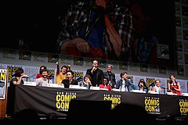

|  | >
Los personajes de la serie Stranger Things
Esta es una lista con los personajes de la serie Stranger Things, una serie de televisión estadounidense de ciencia ficción y terror creada para Netflix por los Hermanos Duffer. Ambientada en la ciudad ficticia de Hawkins, Indiana en la década de 1980, la primera temporada se centra en la investigación de la desaparición de un niño en medio de eventos sobrenaturales que ocurren en la ciudad, incluyendo la aparición de una niña con habilidades psicoquinéticas que ayuda a los amigos del niño desaparecido en su propia búsqueda. La segunda temporada, titulada Stranger Things 2, se establece un año después de la primera, y trata sobre los intentos de los personajes de volver a la normalidad y las consecuencias de esa temporada.
Los actores de la primera temporada son [Winona Ryder], [David Harbour], Finn Wolfhard, Millie Bobby Brown, Gaten Matarazzo, Caleb McLaughlin, Natalia Dyer, Charlie Heaton, Cara Buono y Matthew Modine, con Noah Schnapp y Joe Keery en papeles recurrentes. Para la segunda temporada, Schnapp y Keery se convirtieron en personajes principales, junto con las incorporaciones de Sadie Sink, Dacre Montgomery, Sean Astin y Paul Reiser.